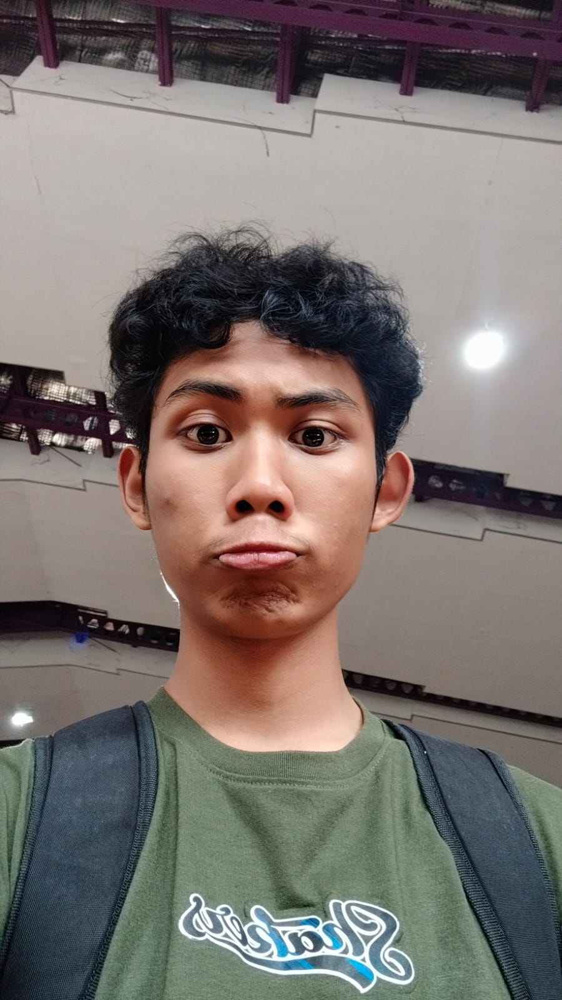
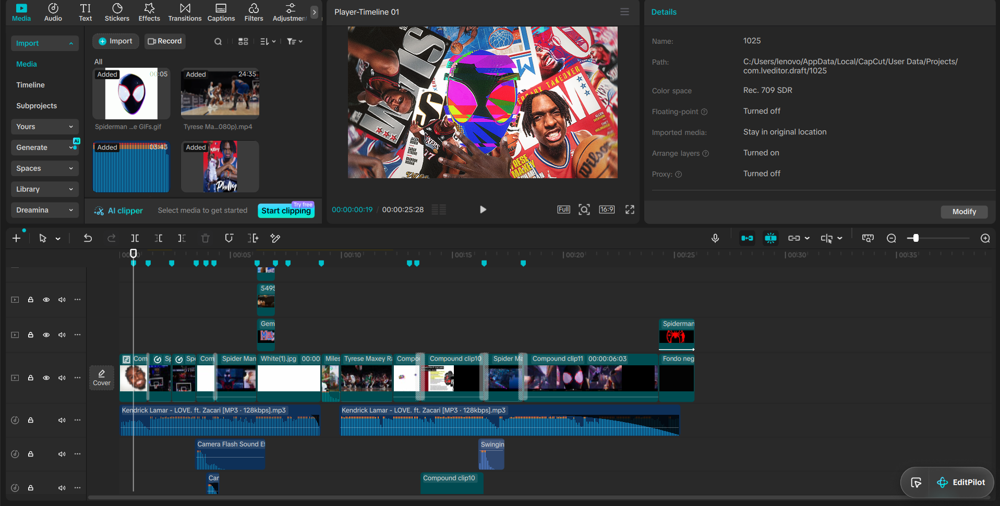

DOMINIKUS
MARVELLINO
AI & Big Data Undergraduate at Unika Soegijapranata · High-Octane Short-Form Sports Video Editor (@2kMarvin).

Synthesizing algorithmic precision with short-form motion rhythm. Leveraging predictive data pipelines while orchestrating viral visual narratives for sports communities.
Aggregated organic reach on premier NBA & NFL highlight sequences.
Storyteller at the intersection of AI, big data & viral sports motion.
I have always possessed a fierce drive to learn, create, and connect—whether that means decoding complex models in high-level coursework or sculpting high-retention stories across digital media.
This methodology powered a 94.93 overall high school academic distinction at SMA Xaverius Pringsewu, while concurrently launching the sports editing channel 2kMarvin. Today, that engine generates tens of thousands of views through strict micro-pacing, precise color science, and algorithmic hook timing.
Work & Prototypes
2kMarvin Sports Motion Architecture
Short-form high-octane video edits centered around NBA and NFL/NCAA football highlights. Curated dynamic pacing, bespoke color grading LUTs, and micro-synced audio rhythm for sports audiences.

Motion pacing calibrated for the algorithmic eye.
Executing precision cuts across Premiere Pro and CapCut. Combining data analytics to evaluate watch duration, sound retention curves, and instant narrative hooks.
IBM Bob 2.0 Hackathon Participant
Collaborative challenge focused on rapid prototyping of artificial intelligence, vector query solutions, and generative pipelines.
Digital Skill Fair 54.0: FWD, FE, BE
Intensive technical sprint encompassing Fullstack Web Development, modern Frontend frameworks, and Backend API architectures.
PromptGold — pytest for Prompts
Python framework that turns prompt changes into regression tests: blessed golden files, offline cassette replay, CI verdicts, and a GitHub Action. Built during the IBM Bob 2.0 hackathon with a 40-attack scan/heal workflow.
PythonPath — 45-Day Course
Zero-dependency learning dashboard with a daily roadmap, short lessons, five mini-projects, practice prompts, and progress saved in the browser. Runs straight from index.html.
NFL Weekly Predictor
Weekly NFL outcome predictions built on nflverse play-by-play and schedule data, enriched with Kaggle scores, betting lines and player form. Tuned logistic regression with walk-forward evaluation, leakage-guard tests and a static results UI.
HandGestureConsole
Webcam hand-gesture control for the mouse and workspaces. MediaPipe landmarks feed a gesture state machine with hold cooldowns, an on-screen keyboard, launchers and a global emergency stop hotkey.
Walfy Fall Visual Detector
Single-camera fall detection and TUG/gait screening from MediaPipe pose landmarks: live browser capture, offline video analysis, and MCFD dataset evaluation. A research measurement tool, not a medical device.
Handwritten Digit Recognition
Two independent digit recognizers: a NumPy MLP with hand-written backpropagation that reached 96.7% test accuracy on sklearn digits with gradients verified against finite differences, plus a Keras/MNIST implementation.
Aetheris WildfireWatcher
Report-first global wildfire awareness dashboard plotting GDACS reports and NASA FIRMS satellite detections on an interactive globe, with related headlines and an offline survival-analysis pipeline for 12–72 hour threat estimates. In development.
Verified Metrics & Distinctions
Quantified performance spanning content production, academic rigor, and bilingual communication proficiency.
Sustained audience community built across basketball and football enthusiast communities.
Generated via peak highlight reels recording 75.7K+ and 45.1K+ standalone organic distributions.
Overall high school cumulative score achieved at SMA Xaverius Pringsewu (Physics track).
Advanced English for Communication certification completed via House of Learning.
Experience & Education
Video Editor & Channel Lead
TikTok (@2kMarvin)Directing viral sports clips, video pacing, audio waveform synchronization, dynamic grading, and metadata optimization.
↗Bachelor's Degree
Unika Soegijapranata SemarangMajor in Artificial Intelligence & Big Data. Rigorous exploration of statistical algorithms, distributed data processing, and predictive models.
↗English Communication & IELTS
House of Learning · PringsewuEarned professional credentials in verbal fluency, high-level academic writing, and international group collaboration strategies.
↗High School Diploma (Physics)
SMA Xaverius PringsewuAchieved academic honors with a 94.93 aggregate final grade, reflecting consistent analytical discipline and problem-solving focus.
↗Let's build intelligent media together.
Available for remote video editing commissions, creative sports motion strategy, and AI/Big Data research partnerships.